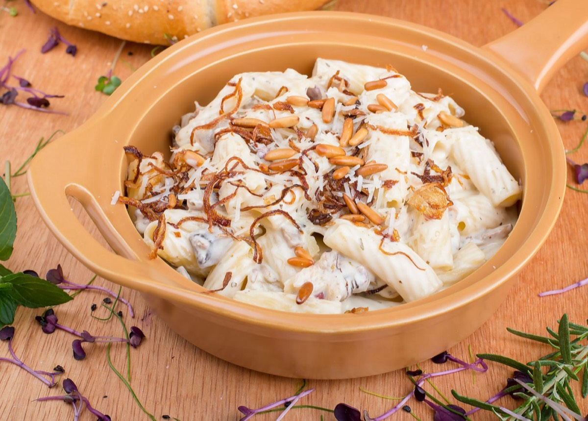

French Onion Pasta
The taste of French onion soup, as a bowl of cheesy pasta. Sweet brown onions, savoury broth, melted cheese.

Stock photo by Shameel mukkath on Pexels. It shows this kind of dish; yours will look a little different.
- Pot
- one deep pan or wide pot, 10 to 12 inches across (3 to 5 quarts), for two. For one, a medium pot (about 3 quarts, 8 inches across) is better, because the liquid stays deep enough to cover the pasta.
- Time
- 50 minutes, start to eating. Most of it is the onions cooking while you stir now and then.
- Hard part
- patience. The onions take 20 to 25 minutes and cannot be rushed with higher heat.
You need
| For one | For two | |
|---|---|---|
| Yellow onions | 1 medium (about the size of a tennis ball) | 2 medium (about 1 pound) |
| Butter | 1 tablespoon | 2 tablespoons |
| Garlic | 1 clove | 2 cloves |
| Dried thyme | 1/4 teaspoon | 1/2 teaspoon |
| Beef broth | 1 3/4 cups | 3 cups |
| Short pasta (penne, rotini or shells) | 4 oz (a quarter of a 1-pound box, about 1 1/3 cups) | 8 oz (half a box) |
| Gruyere or Swiss cheese, shredded | 1/2 cup (2 oz) | 1 cup (4 oz) |
| Grated parmesan | 2 tablespoons | 1/4 cup |
| Salt | a pinch | 1/4 teaspoon |
Also: a knife, a cutting board, a wooden spoon, measuring cups and spoons, a grater if your cheese is a block, and 1/2 cup of water in a mug next to the stove. Optional: black pepper, a teaspoon of soy sauce or Worcestershire sauce for a deeper flavour.
Contains: wheat, milk. Check your labels.
Swaps. Swiss cheese slices from the deli section work in place of shredded: tear 5 slices into small pieces for two, 2 or 3 for one. Gruyere tastes stronger and nuttier; Swiss is milder and cheaper. No thyme: use Italian seasoning (a jar of mixed dried herbs, in the spice aisle).
Is it vegetarian?. Not as written: it uses beef broth. Vegetable broth works in its place, but that alone does not make the dish vegetarian. Gruyere and parmesan are usually made with animal rennet, so buy cheeses whose labels say vegetarian or microbial rennet. Leave out the Worcestershire sauce, which contains anchovy.
The rest of it. Broth: close the carton, keep it in the fridge, and use it within the number of days printed on the carton. A block of Gruyere or Swiss keeps for 3 to 4 weeks in the fridge if you wrap it tightly; grate it over eggs or melt it on toast. The rest of the pasta keeps in the cupboard in its box.
Allergens. Contains wheat (pasta) and milk (butter, Gruyere or Swiss, parmesan). The optional soy sauce adds soy and wheat, and Worcestershire sauce contains fish. Broth varies by brand, so check every label if you are cooking for someone with an allergy.
Before you turn on the stove
- Cut each onion in half from the top to the root end. Peel off the papery skin. Lay each half flat side down and slice it across into thin half-circles, as thin as you can manage. Thick slices take longer to soften. It looks like far too much onion. It shrinks to a quarter of its size.
- Peel the garlic and chop it small. A clove is one segment of a garlic bulb. Pull one off, press it with the bottom of a mug until the papery skin cracks, and peel the skin away.
- If the cheese is a block, shred it on the large holes of the grater. Measure the pasta and the broth.
Cook
- Melt the butter. Put the pan on medium heat, the middle of the dial. Add the butter. It is ready when it has melted and is foaming, about 1 minute.
- Soften the onions. Add all the onions and the salt. Stir to coat them in butter. Set a timer for 5 minutes. Stir every minute. When it rings, the onions should be limp and see-through, and the pile should have started to shrink.
- Brown the onions. Turn the heat down to medium-low, about a third of the way up the dial. Set a timer for 15 minutes. Stir every 2 to 3 minutes, scraping the bottom of the pan. If brown patches stick to the pan or the onions start to look dry or crisp at the edges, add a tablespoon of the water and scrape. When the timer rings, look at the onions. One onion, the amount for one serving, may be done now. Two onions usually need about 5 minutes more. Done means soft, jammy and the colour of peanut butter, with a sweet smell. Jammy means sticky and collapsed, like jam. Black edges or a sharp burnt smell mean the heat is too high.
- Add garlic and thyme. Add the garlic and thyme. Stir for 30 seconds. You should smell the garlic.
- Add broth and pasta. Pour in the broth. Scrape the bottom of the pan with the spoon to lift the brown layer; it is flavour. Turn the heat up to high, the top of the dial, until the liquid bubbles all over. Add the pasta and stir. Push the pasta down so most of it sits under the liquid.
- Simmer. Turn the heat down to medium-low so it bubbles gently. That gentle bubbling is a simmer. Leave the lid off. Set a timer for 11 minutes. Stir every 2 minutes, scraping the bottom, because pasta sticks. If the pan looks nearly dry before the pasta is soft, add 1/4 cup of the water and keep going. If the pasta is still firm in the middle at 11 minutes, give it 2 more. At the end the pasta should be soft when you bite a piece, and there should be a few spoonfuls of glossy brown liquid left in the pan, not a soup and not dry.
- Add the cheese. Turn off the heat. Sprinkle in the Gruyere or Swiss a handful at a time, stirring after each, then the parmesan. The cheese should melt into a sauce that pulls into strings when you lift the spoon.
- Rest and taste. Leave it for 2 minutes. The sauce thickens as it sits. Taste. Add a pinch of salt only if it tastes flat; broth and cheese are already salty.
If something goes wrong
- Onions browning too fast or sticking: lower the heat and stir in a tablespoon of water. Brown is good. Black is burnt and tastes bitter; pick out any black pieces.
- Onions still pale after 25 minutes: your heat is too low. Turn it up a little and give them 5 more minutes.
- Pan dry but pasta still firm: add 1/4 cup of water and cook 2 more minutes. Repeat if needed.
- Too soupy when the pasta is done: leave it on medium-low for 1 to 2 more minutes, stirring, before the cheese goes in.
- Cheese went into one clump: the pan was too hot or the cheese went in all at once. Add a splash of water and stir over low heat until it loosens.
The amounts for two were checked against 5 published versions of this dish; the amounts for one are scaled from them.
In the app this recipe is one step to a screen, with the amounts beside each step and timers that ring when your phone is locked. It is free, with four other complete recipes. First Pot for iPhone and iPad.